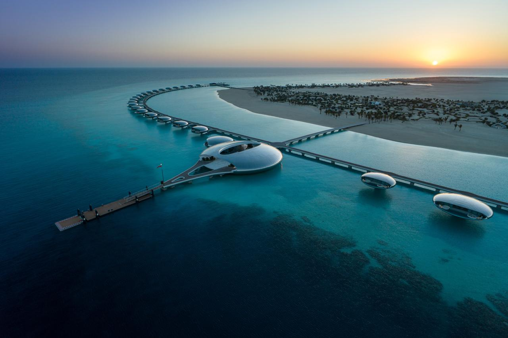
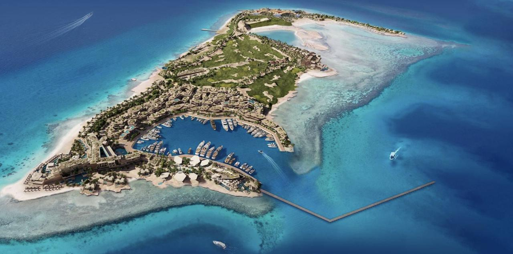

Explore NEOM Islands

جزيرة شيبارة (Sheybarah Island)
Sheybarah Island is part of the Red Sea Project in the Kingdom of Saudi Arabia and is considered one of the most prominent luxury tourist destinations. The island features a unique architectural design, with circular villas floating above the water, creating a futuristic atmosphere that harmonizes beautifully with the marine environment.
Sheybarah Island is part of the Red Sea Project in the Kingdom of Saudi Arabia and is considered one of the most prominent luxury tourist destinations. The island features a unique architectural design, with circular villas floating above the water, creating a futuristic atmosphere that harmonizes beautifully with the marine environment.

جزيرة سندالة (Sindalah Island)
Sindalah Island is the first luxury marine destination within the NEOM project, located on the Red Sea. It features a modern design, a yacht marina, upscale hotels, and entertainment facilities. Aiming to become a global hub for luxury and marine tourism, it is set to welcome visitors starting in 2024.
Sindalah Island is the first luxury marine destination within the NEOM project, located on the Red Sea. It features a modern design, a yacht marina, upscale hotels, and entertainment facilities. Aiming to become a global hub for luxury and marine tourism, it is set to welcome visitors starting in 2024.